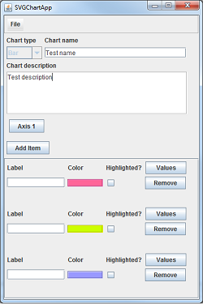

SVG i dagens nettlesermarked
Petter Dahl Thunæs / Robin Smidsrød
Høgskolen i Vestfold / Vestfold University College
Problemstilling
SVG mangler markedspenetrasjon
Fremdeles ikke mulig å benytte uten omtanke
Hvordan har Microsoft påvirket adopsjon av SVG?
Alternativer til SVG
Modellapplikasjon:
Generatorbibliotek for kake-/linje-/stolpe-diagram i SVG
Grafisk brukergrensesnitt
Arbeidsmetodikk
Smidig utvikling (agile)
Sprinter
Planlegging i forkant
Oppfølging i etterkant
Engelsk i programvare
Prosessverktøy
Utviklingsverktøy:
Java
Eclipse
Lang erfaring gjennom studietiden
Prosjektstyring
LiquidPlanner.com
Gratis tilgang for klasseromsbruk
Versjonskontroll
Tekstproduksjon
Markdown
Template Toolkit
S5 slideshow
Perl
Hva er SVG?
2D-grafikk (primært vektorbasert)
Åpen standard fra W3C
Gjenbruk av standarder
Applikasjon i XML
Deklarativ (som HTML)
Støtter scripting (ECMAScript)
DOM-støtte
Animasjon
Deklarativ (SMIL)
Prosedyrebasert (scripting)
Medlemmer i SVG Working Group
Adobe Systems Inc., Apple, Inc., Canon, Inc., Cisco, ERICSSON, Ikivo AB, INSTITUT TELECOM, Microsoft Corporation, Mozilla Foundation, Opera Software, PTC-Arbortext, Quickoffice Inc, Rochester Institute of Technology, Samsung Electronics Co., Ltd., Telecom Italia SpA
Aktivitet på offentlige epostlister:
Historisk bakgrunn
Forgjengere: PGML, VML, HGML, DrawML, WebCGM
Beslutning: Stiftelse av SVG WG
Fra VML:
Kompakt sti-syntaks (path)
Fra PGML:
Koordinatsystemet
Transformasjoner
Fargerom
Tekst
Metadata kodet som XML-attributter, ikke som elementer
Gode støtte for semantisk separasjon
Integrert støtte for hyperlenking
Utgivelser av SVG-standarden
SVG 1.0
Godkjent 4. september 2001
SVG 1.1
SVG Mobile (Basic og Tiny) 1.1
SVG Full 1.2
Sist oppdatert 13. april 2005 (ikke godkjent)
SVG Print 1.2
Sist oppdatert 21. desember 2007 (ikke godkjent)
SVG Tiny 1.2
Godkjent 22. desember 2008
Hvordan ser SVG ut?
Applikasjon i XML
XML namespace
http://www.w3.org/2000/svg
Mimetype
Filendelse
Støtter komprimering
Grafikk-primitiver
Linjer, polygon, rektangel, stier
Sirkel, ellipse, tekst, bitmap
Linje
line example
<?xml version="1.0" encoding="UTF-8"?>
<svg version="1.1" xmlns="http://www.w3.org/2000/svg"
viewBox="0 0 350 350">
<line x1="0" y1="0" x2="300" y2="300"
style="stroke: rgb(99,99,99); stroke-width: 2;"
/>
</svg>
Sammenhengende linjer
polyline example
<?xml version="1.0" encoding="UTF-8"?>
<svg version="1.1" xmlns="http://www.w3.org/2000/svg"
viewBox="0 0 1200 1200">
<polyline
fill="none"
stroke="blue"
stroke-width="10"
points=" 50,375
150,375 150,325 250,325 250,375
350,375 350,250 450,250 450,375
550,375 550,175 650,175 650,375
750,375 750,100 850,100 850,375
950,375 950,25 1050,25 1050,375
1150,375"
/>
</svg>
Polygon
polygon example
<?xml version="1.0" encoding="UTF-8"?>
<svg version="1.1" xmlns="http://www.w3.org/2000/svg"
viewBox="0 0 350 350">
<polygon points="220,100 300,210 170,250 123,234"
style="fill: #cccccc; stroke: #000000; stroke-width: 1;"
/>
</svg>
Rektangel
rect example
<?xml version="1.0" encoding="UTF-8"?>
<svg version="1.1" xmlns="http://www.w3.org/2000/svg"
viewBox="0 0 300 300">
<rect x="20" y="20" rx="10" ry="5" width="250" height="100"
style="fill: red; stroke: black; stroke-width: 5; opacity: 0.5;"
/>
</svg>
Sti
path example
<?xml version="1.0" encoding="UTF-8"?>
<svg version="1.1" xmlns="http://www.w3.org/2000/svg"
viewBox="0 0 400 400">
<path d="M153 334
C153 334 151 334 151 334
C151 339 153 344 156 344
C164 344 171 339 171 334
C171 322 164 314 156 314
C142 314 131 322 131 334
C131 350 142 364 156 364
C175 364 191 350 191 334
C191 311 175 294 156 294
C131 294 111 311 111 334
C111 361 131 384 156 384
C186 384 211 361 211 334
C211 300 186 274 156 274"
style="fill: white; stroke: red; stroke-width: 2;"
/>
</svg>
Sirkel
circle example
<?xml version="1.0" encoding="UTF-8"?>
<svg version="1.1" xmlns="http://www.w3.org/2000/svg"
viewBox="0 0 200 200">
<circle cx="50%" cy="50%"
r="50"
stroke="black" stroke-width="2"
fill="red" />
</svg>
Ellipse
ellipse example
<?xml version="1.0" encoding="UTF-8"?>
<svg version="1.1" xmlns="http://www.w3.org/2000/svg"
viewBox="0 0 200 200">
<ellipse cx="50%" cy="50%" rx="50%" ry="25%"
style="fill: rgb(200,100,50); stroke: rgb(0,0,100); stroke-width: 2;"
/>
</svg>
Tekst
text example
<?xml version="1.0" encoding="UTF-8"?>
<svg version="1.1" xmlns="http://www.w3.org/2000/svg"
viewBox="0 0 300 300">
<text x="10" y="20" style="font-family:sans-serif;font-size:24"
>Stationary text</text>
<text x="10" y="40" style="font-family:serif;font-size:24">Moving text
<animateMotion path="M 10 40 L 200 40" dur="0.5s" fill="freeze" />
</text>
</svg>
Filter
filter example
<?xml version="1.0" encoding="UTF-8"?>
<svg version="1.1" xmlns="http://www.w3.org/2000/svg"
xmlns:xlink="http://www.w3.org/1999/xlink"
viewBox="0 0 300 300">
<defs>
<filter id="shadow">
<feGaussianBlur in="SourceGraphic" stdDeviation="2" result="blur" />
<feOffset in="blur" dx="3" dy="3" />
</filter>
<text id="text"
x="10%" y="10%"
font-family="sans-serif" font-size="150%"
>Text with drop shadow
</text>
</defs>
<use xlink:href="#text" filter="url(#shadow)" stroke="grey" />
<use xlink:href="#text" stroke="black" />
</svg>
Animasjon
animation example
<?xml version="1.0" encoding="UTF-8"?>
<svg version="1.1" xmlns="http://www.w3.org/2000/svg"
viewBox="0 0 300 300">
<rect
x="20" y="20"
rx="0" ry="0"
width="250" height="100"
fill="red"
stroke="black" stroke-width="5">
<animateColor attributeName="fill" attributeType="XML"
from="red" to="yellow"
dur="2s"
fill="freeze"
/>
<animate attributeName="rx" attributeType="XML"
from="0" to="10"
begin="2s" dur="2s"
fill="freeze"
/>
<animate attributeName="ry" attributeType="XML"
from="0" to="10"
begin="2s" dur="2s"
fill="freeze"
/>
</rect>
</svg>
Programvare med SVG-støtte
Programvare som kan produsere SVG-dokumenter
Kommersiell programvare
Fri programvare
Utviklerverktøy
Kommersiell programvare
Microsoft Visio
Adobe Illustrator
Støtter SVG siden versjon 9
Utvidet SVG-støtte i versjon 12 (CS2)
Støtter avansert SVG-funksjonalitet som filtre, interaktivitet, typografi, hyperlenking
CorelDRAW
Støtter SVG siden versjon 10 (2000)
Støtter static profile godt
Noen rariteter (skygger blir rendret som bitmap)
Xara Xtreme
Støtter SVG siden versjon 3.2
Ikke komplett støtte (jobber med saken)
Fri programvare
OpenOffice.org Draw
Støtter SVG siden 2002
Basert på Batik Toolkit
Inkscape
Bruker SVG som primært filformat
Støtter omtrent hele SVG-standarden (1.1)
Unntakene er animasjon og noen filtre
Scribus
Elementær støtte for SVG
Noen mangler i støtte av tekst-elementet
Eksport av SVG er godt støttet
Import av SVG fremdeles problematisk
Verktøy for utviklere
Batik SVG Toolkit
Javabibliotek
Beste implementasjon på markedet
Cairo
2D-grafikk-bibliotek (C++)
Støtter mange programmeringsspråk
Gecko- og WebKit-motorene benytter Cairo
Processing
Programmeringsspråk
Visuell kontekst
Bygd på toppen av JVM
Støtter import av SVG-primitiver
Nettlesere og SVG-støtte
SVG har vært tilgjenglig lenge
Stor variasjon i nettlesere implementasjoner
Ikke garantere for innhold
Internet Explorer har ingen støtte for SVG
Adobe SVG Viewer / Apache Batick SVG Toolkit
Jeff Schiller's implementasjons test
Firefox, Safari, Opera, Chrome, Internet Explorer
Dekningsgrad i implementasjonene
Firefox, utgangspunkt for sammenligning
Text module, mangler symbol støtte
Cursor module, egendefinert peker
Animation, flere feil og mangler
Opera har den beste implementasjonen
Video og lyd, mangler.
Font module, symbol støtte.
Chrome og Safari, basert på Webkits SVG implementasjon.
Text module, mangler symbol støtte.
Filter module, mangler.
Antimation module, bedre implementert enn Firefox
Font module, bedre enn andre nettlesere.
Ikke støttet funksjonalitet
Modul
Firefox
Opera
WebKit
Filter
OK
OK
FEIL
Font
FEIL
OK
OK
Animation
FEIL
OK
DELVIS
Text
DELVIS
OK
OK
Funksjonalitet med feil
Firefox, dårlig Font/Animation implementasjon.
Ikke mulig å animere element over tid.
Ikke mulig å skalere eller rotere element.
Ikke mulig å vise symboler og tegn.
Webkit, dårlig Cursor/View/Animate implementasjon.
Ikke mulig å definere egen peker.
Ikke mulig å hente ut aktive elementer.
Ikke mulig å animere element over tid.
Ikke mulig å skalere eller rotere element.
Opera minst feil, best støtte.
Spesial tegn i Font / Text modulen.
Font/Animation, best implementasjon i Opera.
Ingen SVG-støtte i IE
IE har aldri støttet SVG
Tredjepartstillegg
Adobe SVG Viewer
Batik Plugin
SVG WG deadlock
IE benytter VML
Nok med et grafikk-språk
IE team mer eller mindre nedlagt i 5 år
Microsoft må revurdere strategi
Fallende markedsandeler for IE
EU-domstolen / monopol
Økt antall mobile enheter på markedet
Microsoft melder seg inn i SVG WG
Januar 2010
Positivt sjokk på webutviklere verden over
Spørsmål fra media:
Svar fra Microsoft:
Microsoft IE9 vil støtte SVG
Mai 2010
Støtte for grunnleggende elementer i SVG 1.1
IE9 Preview SVG support:
Most SVG document structure, scripting (eventing), and styling (inline and through CSS)
Many presentation elements and their corresponding attributes and DOM, including:
paths
shapes
colors
transforms
Alternativer til SVG
Flash har større brukermasse og markedsandel
Flash er mer utbredt på nett
SVG er internetts offisielle åpne standard for grafikk og animasjon (W3C)
Flash og Silverlight har mange flere utviklere
Flash har god funksjonalitet for video og lyd
Det finnes ingen SVG-implementasjon uten mangler
Vanskelig å ta i bruk for utviklere
Microsoft har annonsert sin interesse for SVG
Adobe Flash
Flash har lang fartstid
Enkelt å lage spennende grafikk og animasjoner
Flash er en multimedia-plattform
Flash benytter vektor- og raster-grafikk
Brukes til å lage interaktive og spennende nettsteder
ActionScript, programmeringspråk for Flash
Språket brukes til mer avanserte operasjoner
Oppkobling av eksterne script, sende data, osv.
Krever ekstern plugin fra Adobe
Fordeler med Flash
Markedsdominerende, de fleste bruker Flash
Samme utseende/rendering alltid garantert
Ulemper med Flash
Flash har problemer med sikkerhet
Trusteer bekrefter Flash som en synder når det kommer til sikkerhetshull
Flash krever avanserte spesialverktøy
Gratis og kommersielle verktøy er tilgjenglige
Gratisverktøy holder ofte ikke mål
Plugin kreves for kjøring av Flash-applikasjoner
Adobe Flash er et proprietært prosjekt
Microsoft Silverlight
Silverlight - Flash i Microsoft-innpakking
Rammeverk for Microsoft-utviklere
Kan lage grafikk, animasjoner, video og lyd
Moonlight - kjører .NET-kode på BSD/UNIX-plattformen
Utvikling i vanlig Microsoft-miljø (Visual Studio)
Svært vanskelig å utvikle for med en tekstbehandler
Fordeler med Silverlight
Microsoft-rammeverk for programvareutvikling
Bredere fokus enn andre teknologier
Ikke bare tekst, grafikk, animasjon, osv.
Fordeler med Raphaël
Imperativt programmeringsfokus
Enklere å duplisere grafikk-elementer
Enklere å gjøre endringer
Tar i bruk teknologi som allerede eksisterer i nettlesere
Ulemper med Raphaël
Krever inkludering av JavaScript-bibliotek på nettsiden
Krever JavaScript-støtte i nettleser
Tregere en innebygd grafikkstøtte
Ekstra programvarelag
Ulemper med VML
Enda en teknologi å ta hensyn til
Dynamisk generering av SVG eller VML krever komplisert kode
Kun tilgjenglig i Internet Explorer
Utviklingen av VML har stoppet
Konklusjon
God utvikling siden 2001
Tilgjengelig i mange produkter
Microsoft/IE er ombord
Webutviklere må fremdeles forholde seg til implementasjonsfeil
VML, Flash og Silverlight kommer ikke til å forsvinne over natta
Raphaël er en god kompatibilitetsløsning
Svært positive fremtidsutsikter for SVG
Om 3-5 år bør IE9 ha erstattet tidligere versjoner
Modellapplikasjonen
Utfordrende
Omfattende spesifikasjon
Vanskeligheter
Koordinatsystemet
Transformasjoner
God isolering av funksjonalitet
Få eksterne avhengigheter
Mønstre
Chain-of-Responsibility
Model-View-Controller
Sektordiagram
sector chart
En akse
Utheving vha. forskyving
Fargekoding
Totalsum
Plassering prosentanvisning
Stolpediagram
bar chart
En akse
Vertikal
Elementer horisontalt
Utheving via filter
Elementverdier vertikalt
Sirkeldiagram
scatter chart
Brukergrensesnitt

Benyttet CoR (Chain of Responsibility)-mønster
Benyttet enkle layouts
Benyttet statisk kontroller
Henter og skriver data til API
Benyttet MVC (Model-View-Controller)-mønster
SVG-generatorbibliotek
SVGChartLibrary UML Class Diagram
Chart (interface)
AbstractChart
SVGRenderer (interface)
AbstractSVGRenderer
Range
Item
Value
SectorChart
BarChart
LineChart
ScatterChart
Utviklingsprosess
Markdown + Git
Perl-applikasjon for å bygge rapport og presentasjon
HTML
Konvertert til PDF
Bruker S5 slideshow mal
Revisjonskontroll
All kildekode
Alle dokumenter
Prosjektstyring
LiquidPlanner
God oversikt over risiko